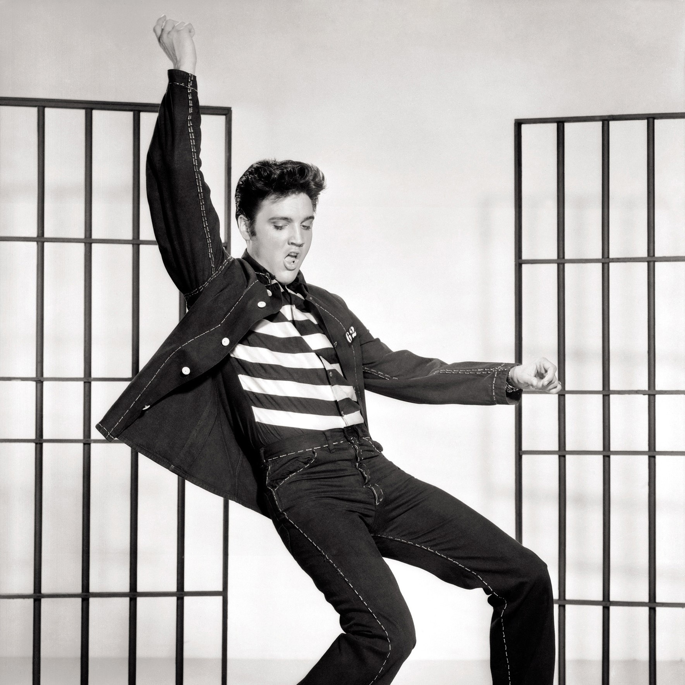
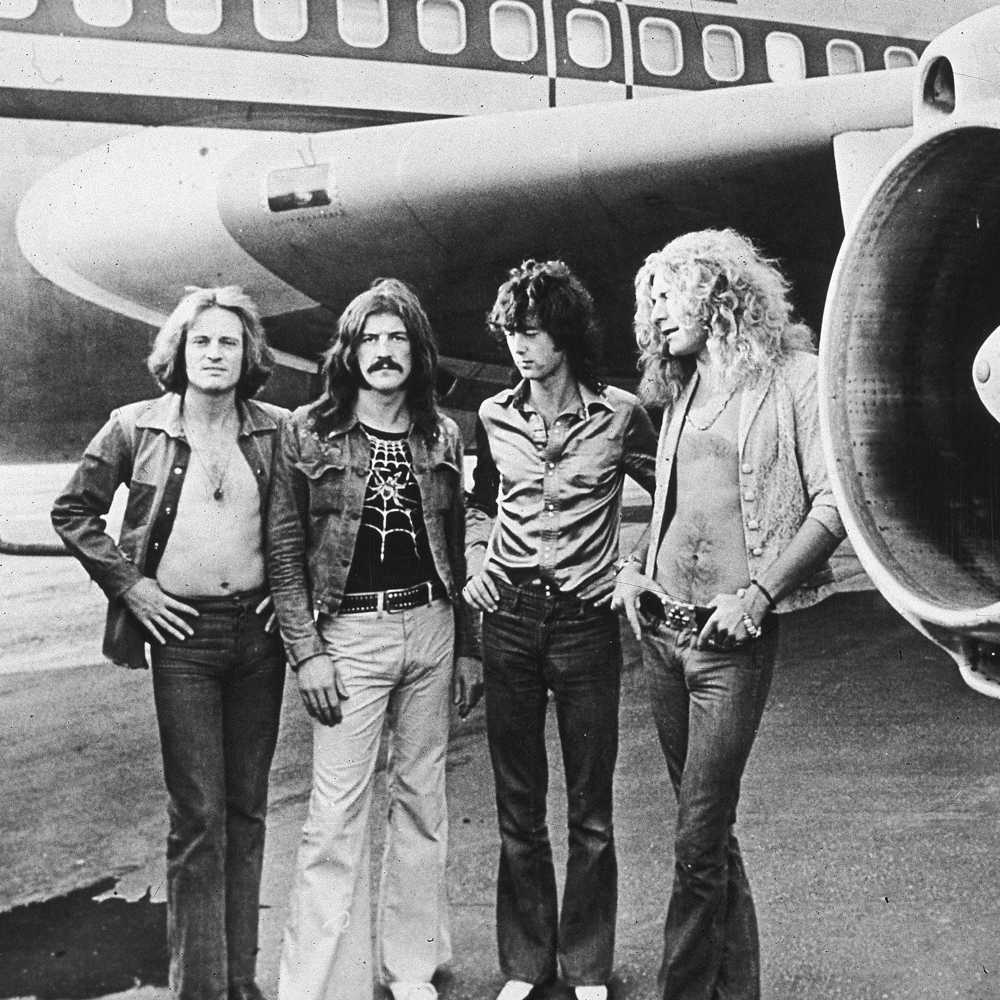
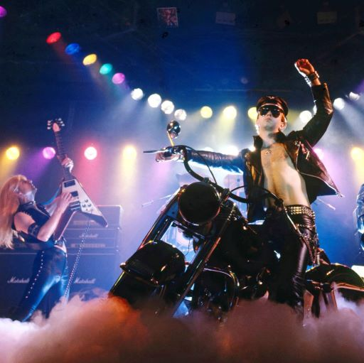
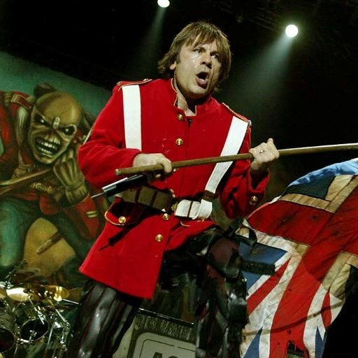
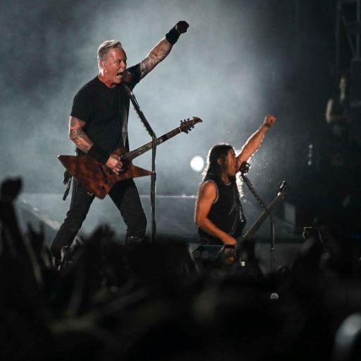
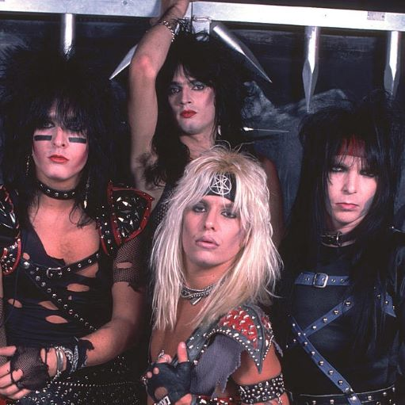
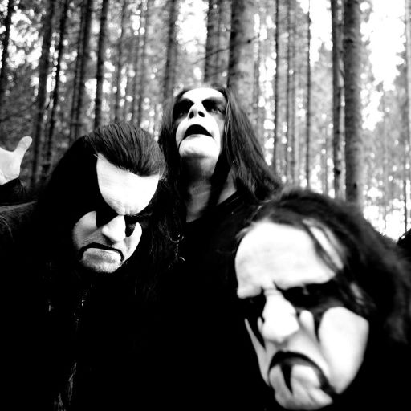

Welcome to Metal History!
Paragraph Content Here

Early Rock n' Roll

British Invasion of '60s Rock

The Birth of Heavy Metal
Origins of Punk

New Wave of British Heavy Metal

Thrash & The Big Four

Hair Metal: Where Metal Met Pop
The Brutality of Death Metal

The Norwegian Black Metal Scene